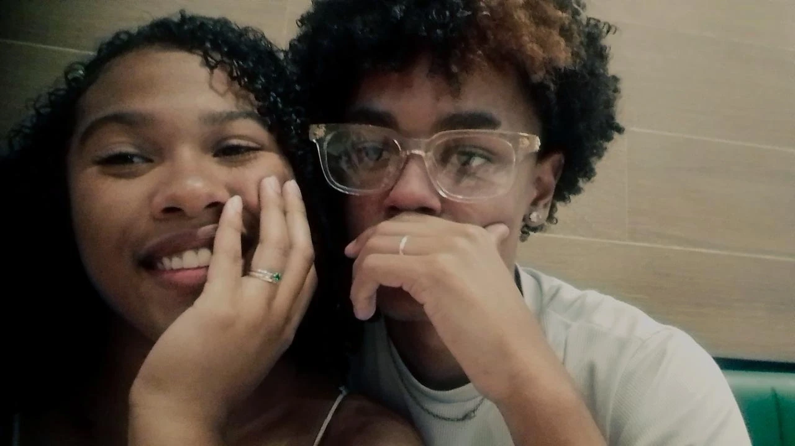
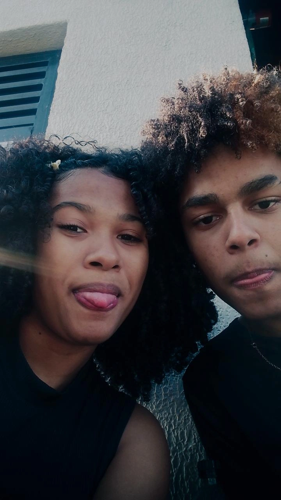
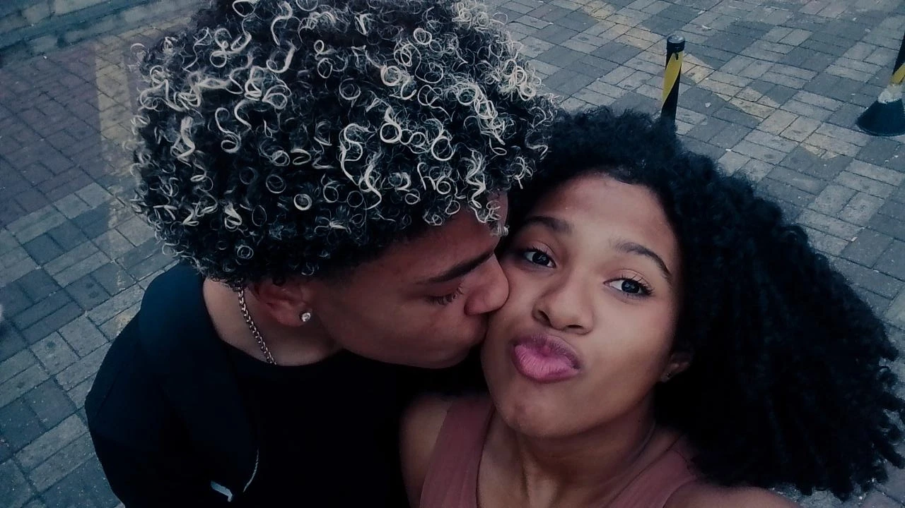
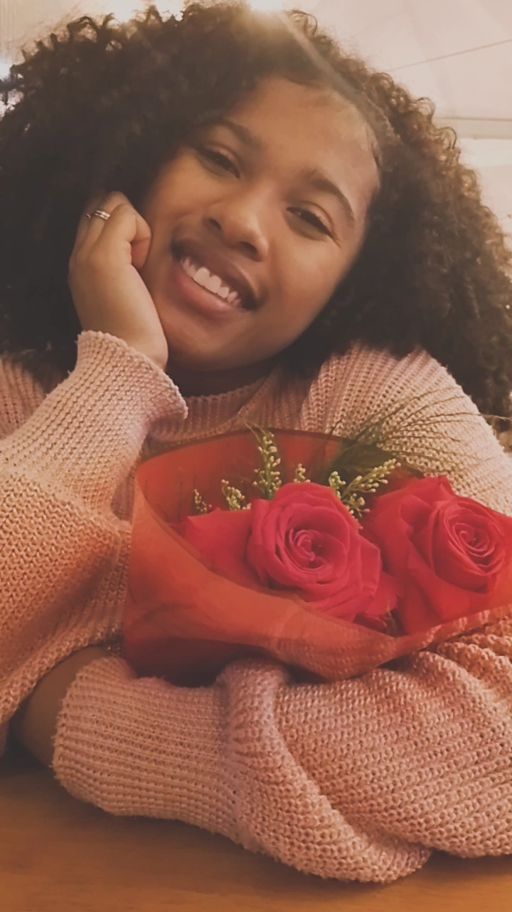

NOSSO PRIMEIRO ANO · UM LUGAR PARA VOCÊ
Mirella,
entra. O carinho é seu.
Eu quis guardar um pouco de nós em um lugar que você pudesse visitar quando desse vontade de sorrir.
Tem fotografias, palavras que eu queria te dizer e pequenas surpresas pelo caminho. Vá sem pressa. Cada detalhe foi pensado com amor.
Com amor, Arthur.
Vamos reviver nossas lembranças →




